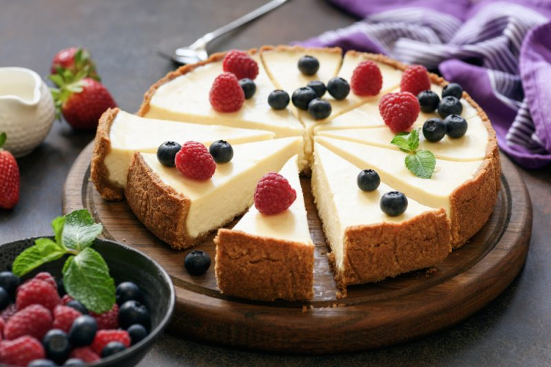

Чизкейк

Чизкейк Нью-Йорк – традиционный сырный торт, родом из Древней Греции. Это не только вкусное, но и полезное блюдо. Состоит оно, преимущественно, из мягкого диетического сыра. Традиционно этот десерт готовят на основе мягкого сливочного сыра или сыра Филадельфия, но для тех, кто соблюдает диету, подойдут рецепты чизкейков на творожной основе.
Вам понадобится:
Печенье,Корица,Маргарин,Мягкий сыр сливочный,Сахар,Ванильный сахар,Лимон,Яйца,Сметана,Соус,Свежая клубника,Лимонный сок,Вода
Приготовление:
- Печенье измельчаем и засыпаем в блендер с добавлением чайной ложки корицы. Три столовых ложки маргарина нагреваем до жидкого состояния.
- Растопленный маргарин заливаем в печенье. Включаем блендер и перемалываем ингредиенты до однородности.
- Берём форму для выпекания со съёмным дном. Дно застилаем пергаментом и смазываем внутреннюю часть формы маргарином.
- Выкладываем перетёртое печенье толстым слоем в форму и плотно утрамбовываем. Отправляем в холодильник на пару часов.
- Взбиваем с помощью блендера или венчика мягкий сыр с сахаром.
- Добавляем немного ванильного сахара и цедры лимона. После отправляем несколько яиц в получившуюся смесь и взбиваем все ингредиенты до однородного состояния.
- Выливаем сырную массу в форму, разравниваем поверхность и отправляем запекаться в духовку, разогретую на 170-180 градусов. Выпекаем десерт в течение часа.
- Добавляем 250-300 грамм сметаны в отдельную ёмкость, добавляем сметану по вкусу и пол чайной ложки ванильного сахара. Тщательно перемешиваем смесь ложкой или венчиком.
- Добавляем в блендер свежую клубнику, сахара и пол чайной ложки лимонного сока. Доливаем немного воды и измельчаем ягоды до однородного состояния.
- Достаём чизкейк из духовки. Выкладываем на десерт сметанную смесь и ставим в духовку, разогретую на 200 градусов. Запекаем сметанный крем в течении 4-5 минут.
- Вынимаем десерт из формы и выкладываем на блюдо для охлаждения.
- Оформляем десерт дольками свежей клубники и подаём к столу с клубничным соусом.